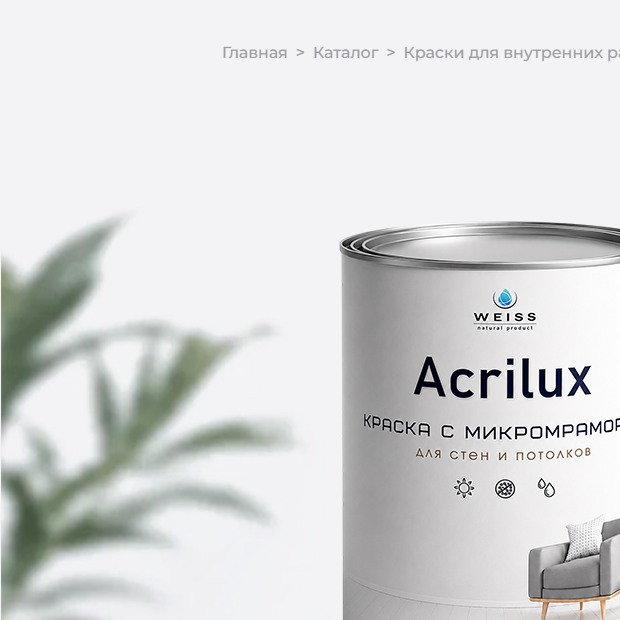
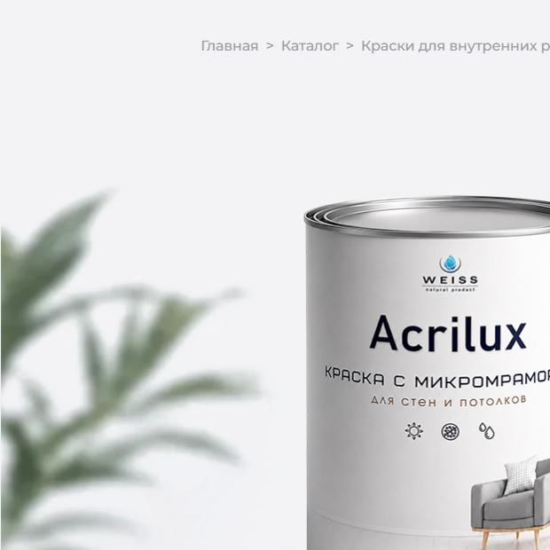
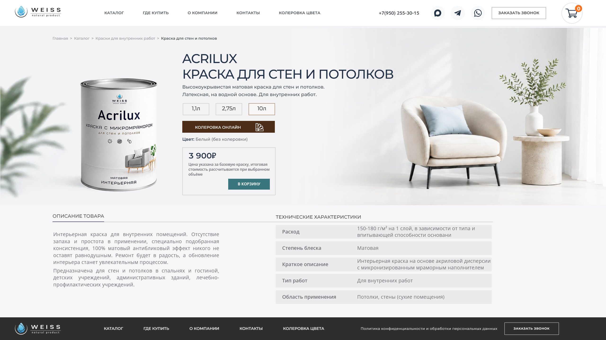
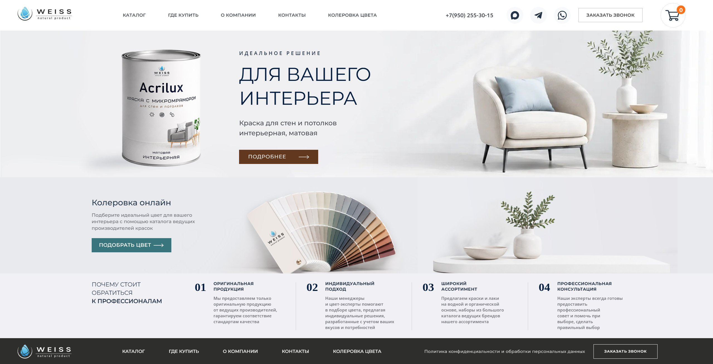
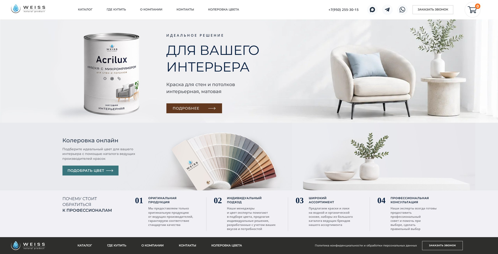
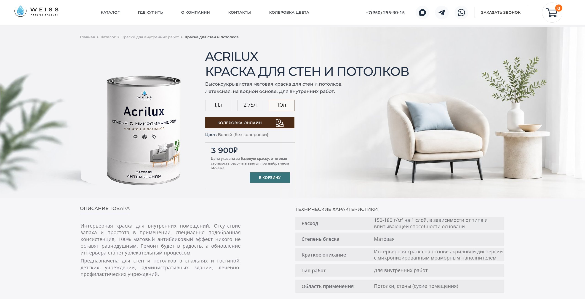
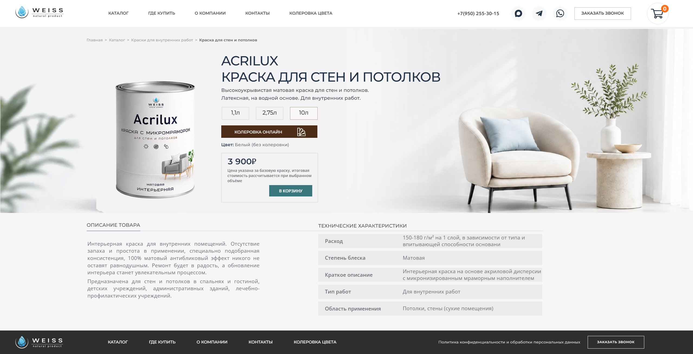

Скриншоты headless Chrome, ширина окна 2559 и 2560 px. «Было» — текущая прод-сборка, «Стало» — новая. Пятно у банки не трогали: фон героя вернули к прежнему поведению, как просили.
Окно 2560×1440, левый край героя. Прошлая правка (фон 2560 px) отлепляла снимок от края окна: слева появлялась светлая полоса, растение обрезалось. Правило удалено — фон снова cover, снимок прижат к краю окна.



Ваша ширина окна — 2559: у экрана 2560 снимается рамка окна. Заморозка макета включалась ровно с 2560, поэтому на 2559 вёрстка оставалась пропорциональной и упиралась в кромку окна без запаса: на главной страница выходила на 3 px, и полоса прокрутки появлялась/исчезала. Теперь заморозка и подгонка по высоте работают с 2550, а подгонка всегда оставляет 2 px запаса.




На 2559 при высоте окна 1439 и на 2560×1440 прокрутки нет ни до, ни после — там не хватало только запаса: любая половина пикселя давала полосу прокрутки, которая отнимала ширину и пересчитывала вёрстку. Теперь запас 2 px задаётся принудительно.
| Окно | Страница | Было | Стало |
|---|---|---|---|
| 2559×1439 | все 8 экранов | запас 0 px | запас 2 px, прокрутки нет |
| 2559×1310 | главная | 1313 / прокрутка 3 | 1310 / прокрутки нет |
| 2559×1310 | товар | 1435 / прокрутка 125 | 1310 / прокрутки нет |
| 2550×1439 | товар | пропорциональная сетка | макетная сетка, прокрутки нет |
| 2560×1440 | товар | прокрутки нет | прокрутки нет, фон cover |
| 2936×1440 | все 8 экранов | — | полотно по центру, прокрутки нет |
| 1920×950 | главная, товар, о компании, контакты, где купить, правовой | — | попиксельно совпадает с прод-сборкой |
| 390×844 / 1024×768 / 1440×900 | товар | — | без изменений |
Совпадение на 1920 проверено хешами PNG: 6 страниц, обе сборки, одинаковые SHA-1. Горизонтальной прокрутки нет ни на одной ширине (2550–2936).